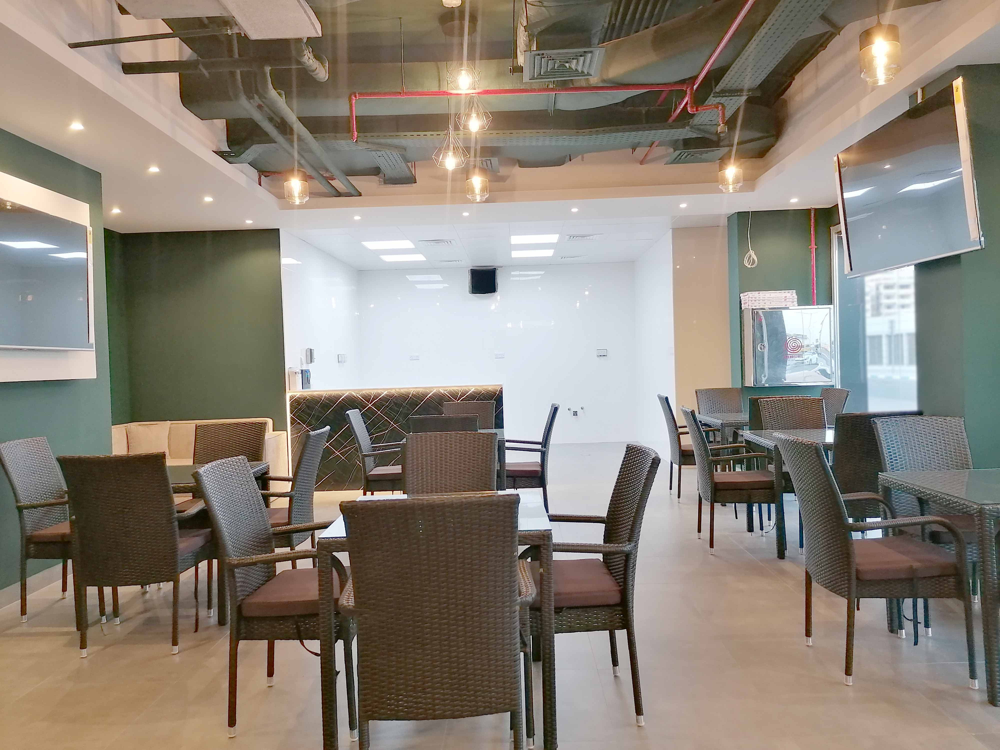
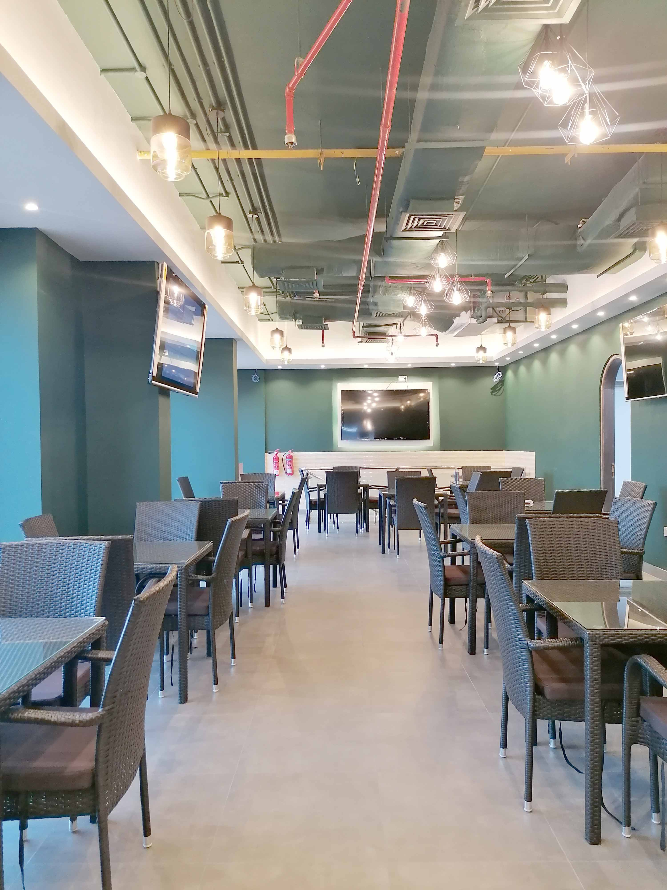
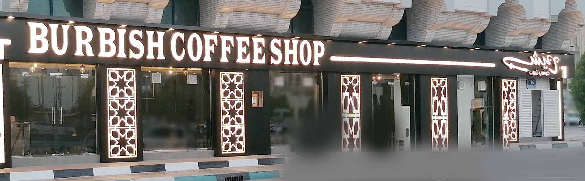
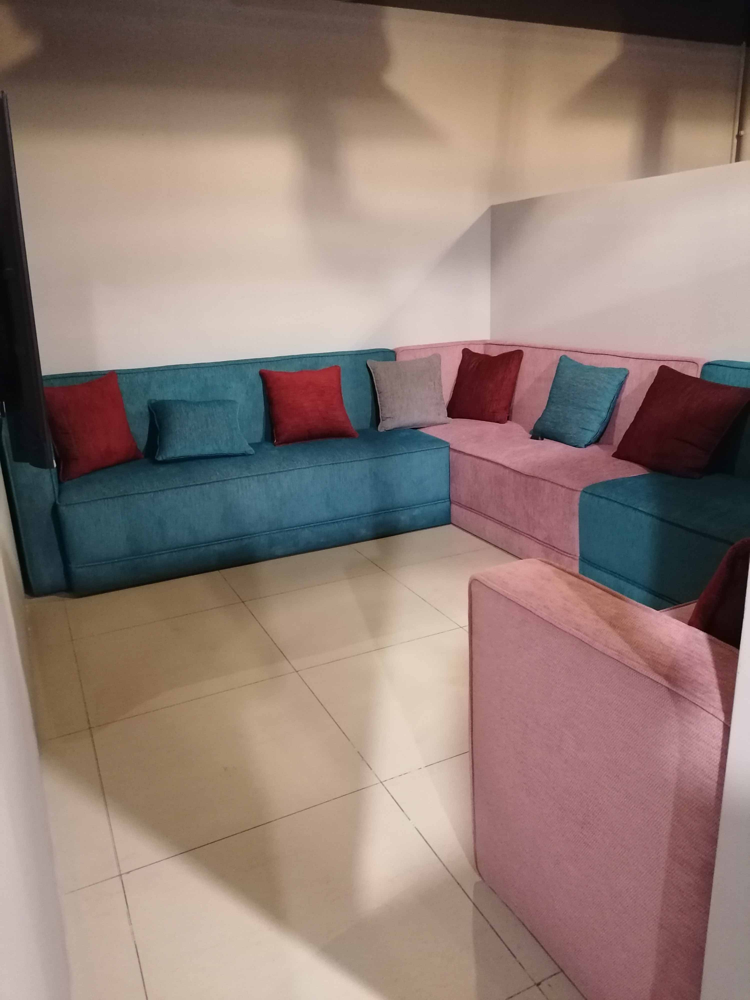
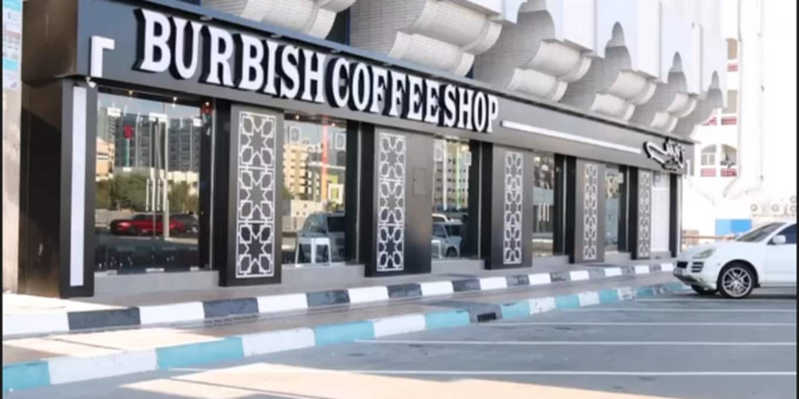

Clean Dining Room
Symmetrical rows, bright flooring, and warm light keep the room open and calm.

Al Dhafrah, Abu Dhabi
A calm Salam Street cafe shaped for easy mornings, relaxed conversations, fresh drinks, and simple comfort food.
The Place
Burbish Coffee Shop sits near the Telecommunication Regulatory Authority on Salam Street in Al Dhafrah. The public listings describe it as a cafe, and the menu stretches from breakfast and sandwiches to pasta, juices, milkshakes, and hot beverages.
Inside, the space balances clean seating, green walls, soft pendant light, and a small lounge corner. It feels practical enough for a quick bite and calm enough to stay for a slower drink.

Atmosphere

Symmetrical rows, bright flooring, and warm light keep the room open and calm.

A quieter pocket for longer conversations and relaxed visits.

Black storefront details and bright signage make the shop easy to recognize.


Reviews
Public review text changes often, so this section links visitors to the live review sources instead of freezing outdated quotes on the page.
Location
Find Burbish Coffee Shop near the Telecommunication Regulatory Authority in Al Dhafrah, Abu Dhabi. Use the map for directions before visiting.
Contact
Call the shop directly for the fastest response. The map link opens directions to the public listing.